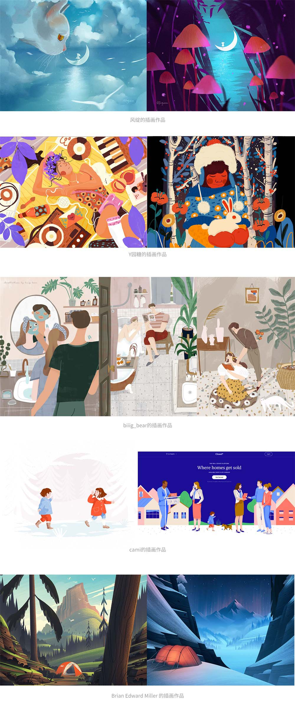
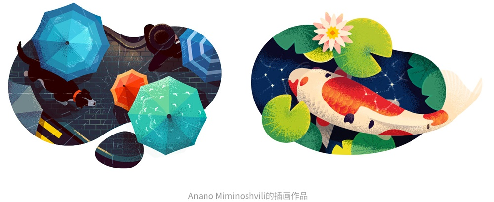

去年年初开始接触手绘插画，在不断学习的过程中也不断地积累。在和很多小伙伴的交流中，感觉到学习插画的迷茫和共有的困惑，于是把自己的一些想法和方法记录下来分享给大家，希望能为大家开启画画 Buff，感受画画带来的快乐。
（干货来了，前排小板凳准备好！）
我对插画的认知，大致可分为两个阶段，也就是工作前和工作后，工作前以传统的出版类为主，工作后以互联网的视觉类为主。
工作前，大概是高中和大学的时候，接触最多的是夏达的漫画、几米的绘本、伊吹五月的同人插图绘本以及丁一晨的条漫，那时候以印刷品为主，算是插画的最早启蒙。
工作后则多为互联网的视觉类，最早认识和知道的插画领域的前辈有旺旺Mandy、Erics、冬不拉dong、少年夹子、饭太稀等。
所以在我看来，插画领域的工作可以基本分为两大类：线下的传统平面印刷出版，以及线上的互联网视觉设计。
绘本类
儿童插画：有故事性、导向性，多为知名童话故事改编或原创性童话故事。
同人插画：电影、游戏、动漫、书籍等主题的同人类插画作品，具有欣赏和珍藏价值。
原创绘本：多为有故事性、主题性的插画作品，个人风格明显。
广告类
常见于流行市面的招贴广告、海报、宣传单等，早期美观度不足，现在在逐渐改善。
刊物类
报纸、杂志、书本等的内页插图设计，封皮插图设计，文章配图设计等。
包装类
产品外包装类的应用也越来越广，最著名的如农夫山泉的各种主题系列包装，其他还有三只松鼠等食品类包装，百雀羚等美妆类包装设计。
UI设计师
Logo&icon：节日换肤、偏向写实的插画风格 icon 等。
APP：开屏界面、节日开屏页面、新手引导页面、内容缺省页面等。
WEB：登录页面、官网设计手绘元素、产品介绍等。

视觉设计师（运营+品牌）
H5：线上宣传类海报及H5小游戏，前者鲜明活泼具有吸引力，后者有故事性、设计感及传播价值和现实意义。
活动页面设计：电商类的店铺活动页面也越来越多的用到手绘元素（同时越来越受欢迎的还有C4D），特点是主题突出、氛围感强，制作周期短，整体版式很重要。
品牌形象：吉祥物、品牌形象、LOGO、表情包、线下延展等。
商业插画师（自由设计师）
类似运营设计师，为某一商品或品牌服务，产出物为线上或线下物料，设计师个人ID 和品牌ID 互相影响、相辅相成。
游戏设计师
CG类游戏原画师，包括游戏场景设定、人物设定、图标和界面设定等多方面的内容。
涂鸦插画
线形或面形涂鸦风格的插画，特点是张扬随意、年轻大胆，凌乱却有章，简单又粗暴，用于H5宣传海报或部分LOGO设计。
描边插画
线面结合的表现形式，在H5中运用的越来越多，同时我认为MBE风格的小插画也属于这个范畴。
矢量渐变插画
矢量渐变插画以渐变场景插画为代表，色彩或优美柔和，或强烈鲜明，整体感强，美观度高，手机APP开屏页面中会见到这样的插画。
扁平插画
和扁平图标一样，扁平插画是去除了很多质感、纹理，只保留主要特点的一类插画，大色块、简约造型是它的基本特点，在手机APP和网页中比较常见。
肌理插画
肌理插画本质上还是属于扁平插画的范畴，用颗粒感制造纹理，一般将颗粒应用在受光面和背光面，增加画面的细节和美观性，让画面更加耐看，运营类插画中这一类技法比较常见。
手绘插画
手绘插画本身也包含着各种风格，和主体的造型、颜色配比、主题传达息息相关，在开屏页和活动页比较常见。
立体插画
从去年开始出现越来越多的2.5D插画，在网页设计、APP启动页比较常见，轻微的透视感增强了画面的趣味性，能更好地进行信息传达。
网站
behance、dribbble、ins、lofter、pinterest、站酷、微博、涂鸦王国等网站。

教程
YOUTUBE、优优教程网、花瓣live、涂鸦王国、自己喜欢的插画师的课程或教程。
插画师（国内+国外）
国内：风绽、erics、插画师卷耳、冬不拉dong、Y园糖、森妮、Littlehmxx、吾空空kongkong、Ciao大榴莲、biiig_bear、Diable咔咔、布林YQ、碧绿色的兔子seven、Tsuyu鱼猫、Paco_Yao、卤猫、饭太稀等。
国外：Cami、garethlucasart、Tom Clohosy Cole、Benjamin Flouw、Dung Ho、Ahmet Iltas、Hannah sun、ranganath krishnamani、Brian Miller、Slawek Fedorczuk、mori_raito、anneliesdraws、Akira Kusaka、Mark Boardman、Tristan Gion。
一般插画分析方法：主题+构图+造型+配色+氛围+肌理+创意
系列插画创作要点：保持主题、造型、肌理三个基本点的一致性
主题
画面主题以及作者采用了什么元素去阐述主题。
在这个过程中可以进行一个情绪板的管理，是一个头脑风暴的过程，发散的层次越多，越能找到一些有创意、新奇的想法。
比如定一个主题叫做四季，也许第一层我们会想到春夏秋冬四个季节的气候，如春雨、夏日、秋风、冬雪。深一层可能会想到四季的植被、衣物、食物。再深一个层次，可能会想到四个季节中分别能体现季节特征的节日或节气。继续深入，四季是否也可以看作人的一生，春生、夏荣、秋瑟、冬萧，然后对应到戏曲中的生、旦、净、末？我举的例子未必恰当，你能理解我的意思就好。
日常工作和生活中画画的灵感从哪里来？
固定的事物：二十四节气、十二月份、东西方节日、放假开学等；
二次创作：童话故事、神话元素、电影电视、音乐绘画、同人作品等；
生活感悟：亲情、朋友、爱情、独处、社会热点，对人性等的思考。
构图
常见的构图有水平线、垂直线、斜线、环形、对称、S、C、平铺、俯视、平视等，根据画面主题和预期的效果进行构图。切忌主体太小、太偏、喧宾夺主等行为。
造型
动物、人物、静物等的造型因为作者不同、感悟不同而有不同的形态特征，毕竟「一千个读者眼中有一千个哈姆雷特」。
对于这部分进行分析的同时也要去积累，他山之石可以攻玉，多多积累总有用得着的一天。比如同样是画一个人，他的五官、四肢、比例、头发会有很多种画法，而你要做的是不断积累，去整理自己的素材库，去学习更多的表现形式以备不时之需。
收藏素材的方式可以以人物 + 动物 + 植物 + 静物 + 风景 + 建筑 + 色彩 + 创意等分类。
配色
配色的方式有千千万万种，常见的配色方式有单色、同色系、邻近色、对立色、互补色、分散互补色等。
我比较习惯的方法是用追波的色卡和 eagle 的色板，在花瓣中也会收藏很多配色用在自己的创作中。快速得到同一色系的色彩方法，控制明度和纯度保持统一，改变色相即可，即H值改变，SB值不变。
氛围
氛围的塑造和颜色有关，更和光线有关，三大面背光面、受光面、侧光面一定要分清楚。如果希望画面更有细节也要注意到高光、灰部、明暗交界线、反光和投影，这些内容并不是都要在画面中体现，但是体现的多一层，则画面的丰富程度就加深一层，更耐看一点。
建议收集一些光感强的插画去欣赏和研究。如果想突出氛围，在创作的过程中可刻意去塑造光，但是注意不要影响到主题的表达。
肌理
肌理是区分不同画风的重要手段之一，每个人都会有自己不同的使用习惯和刻画习惯，而商业插画作品也习惯性的叠加一些纹理来增加画面的细节，是比较普遍实用的方式。
创意
其实每一张插画都是作者的创意成果，但是为什么有的画作让人觉得炫酷、有创意，而有的插画只是好看、舒服呢？和构图、造型等也有很大的关系，常见的创意手法有夸张、对比、超写实等，是为主题服务的另一种强有力手段。
我几乎所有插画作品的图层分类都是 FG+MAN+BG，也就是前景、人物和背景。在画画的过程中我认为图层越多越好，方便修改和创意叠加，背景用来渲染大的氛围和基本基调，人物承担着表达主题的重要任务，前景多采用静物、植物等元素去衬托主体人物。
3. 过程
仅仅从我一贯的作品中分析，画画的过程就是从草稿开始，然后铺大色块，线条区分结构的同时进行投影部分的刻画，点状（小面或小线）增加细节，最后去塑造一些纹理和质感。
得到主题，进行头脑风暴，联想到相关元素，进行大致的构思，并且尽量让自己的画面当中具有一定的故事性，提升一个层次。
在草图阶段解决构图、造型、色调的黑白灰处理等大致情况，这个阶段可以在纸上进行，也可以在 ps 中建立一个线稿的图层。

铺大色调，这时候建议开启一个黑白图层去看一下整体的明暗关系，可以及时调整。
这时主要考虑到光源、氛围、质感纹理的的塑造，一层层去深入刻画，建议齐头并进，一起进行深入刻画，得到一种随时可以停下来不画，又随时可以继续深入刻画的阶段。
用 ps 自带的滤镜 camera raw 去调节整体的色调，完成最后的美化。
复习一下整个作画过程。
主题：
题目：四季 – 冬天；
关键词：萧索、凋零；
色调：一般都用冷色调表示冬天，所以采用带有灰度的暖系倾向色系；
定位：清新、安静、生活化；
联想：晴朗的冬日早晨，阳光洒在身上是凉凉的感觉，穿过小巷拿起晨报，准备走河边小路回家，这时发现家里的猫跟在身后；
根据个人喜好和商业硬性要求增加一些元素，使得故事性更强。
构图：斜线构图，使得画面更有动感和故事性。同时注意主体的位置不要太偏太小，用九宫格的方法确定主体位置。
造型：
主体：大胖妞，头小身子大，简化四肢；
元素：人物、猫咪、远山、河流、植物；
尽量采用偏向几何化的图形进行绘制，不要让画面太繁琐复杂。
配色：冬天萧条的感觉，铺大色块，看黑白灰关系，新建一个调整图层，常用色阶、曲线、黑白、对比度；60灰色+30略灰+10高纯度。
氛围：冷、雪花
肌理：干画笔
创意：人物夸张表现
作画技巧：
png、jpg图片纹理变成笔刷或图案叠加；
干画笔大面积刷出质感+锁定透明像素换色；
干画笔干蹭制造纹理感；
暗部方式同色正片叠底/色谱右下方；
锁定透明像素或剪切蒙版；
开黑白图层看整体的黑白灰关系；
制造纹理边缘的快速方法：正常笔刷刷上去（如粉笔、蜡笔），选区删除，用有肌理的笔刷平铺。好处是有选区不会刷到外面，大笔刷边缘可以拥有同样的质感。